[To catch up, here are Days 1 and 2-A and 2-B and 3]
About a week prior to our bus pulling out of the chancery parking lot in Fargo, I received this invitation in the mail. I was so excited! After having worked with Ascension for several years in pulling together the book I co-authored through them, “What Would Monic Do?”, I was so excited to have a chance to meet some of the staff and their other authors in person! This invitation lit a fire in my heart about the connections that were in store, aside from the main events. Suddenly, the big gathering was starting to feel more personal and intimate.
More on how that went down soon. But truly, Friday was a day to remember. The theme was “Into Gethsemane,” so, we were going into the deep this day, preparing our hearts for the big event tomorrow, Saturday, “This is my body.”
From our Friday morning vantage point, on the same side of yesterday’s Mass but closer to the floor, we had a nice view of the distribution of the Eucharist. I had to smile watching the religious sisters navigating the vessels and directing the priests into the crowd, just like the spiritual mothers they are. But you can see what a big, and organized, job it was!
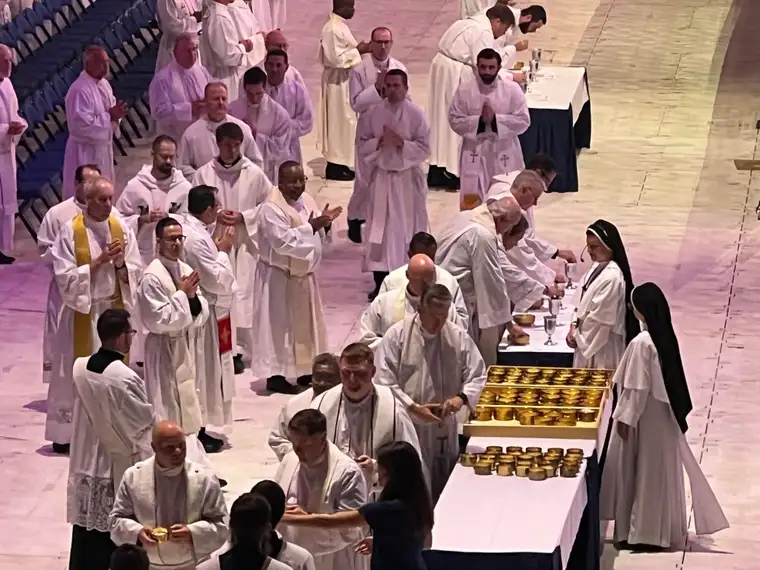
Despite the congress being in a large stadium, I was impressed by how the organizers worked to make it look as sacred as possible, with images and different colors each day. Friday was a blue day, led by the image of the crown of thorns.
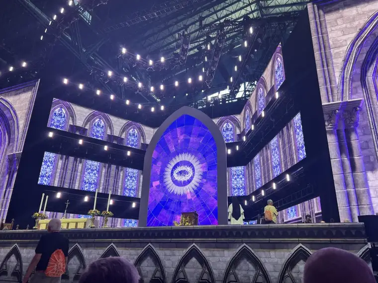
One of the speakers this morning was Tony Melendez. I’d had a chance to interview him some years ago when he was in area, and his story (here) is always inspiring. So I enjoyed seeing him this time, and hearing his story again, not to mention his incredible talent playing guitar with his feet.
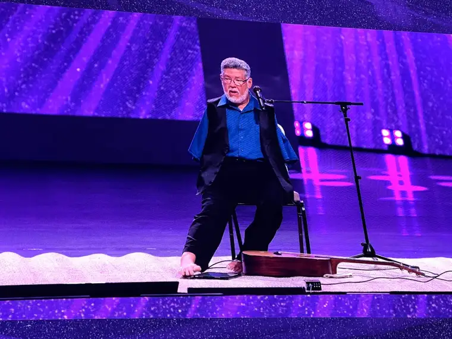
I’d also, more recently, interviewed Dr. Scott Hahn, who’s been hugely influential in my life and my husband’s. He’ll be keynoting our local Eucharistic Congress next month (see my article here). At the end of our phone conversation, I noted I’d be in Indiana, and he said he hoped to meet in person there. So I made sure to get to the exhibit hall during his book signing for that very reason!
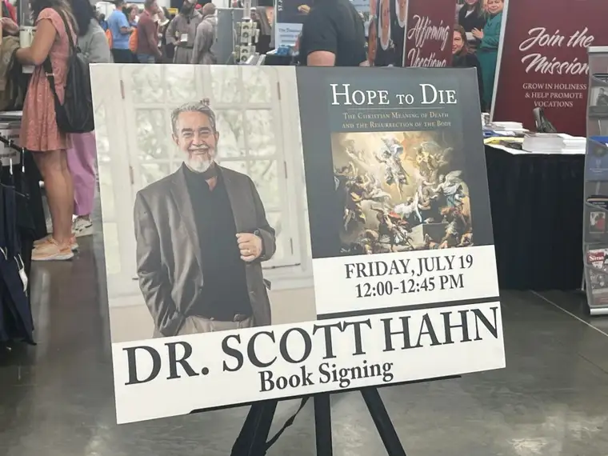
I also wanted to give Dr. Hahn a copy of the book I co-authored as a gift to him (see table on right below). I hope it made it back to the Ohio!
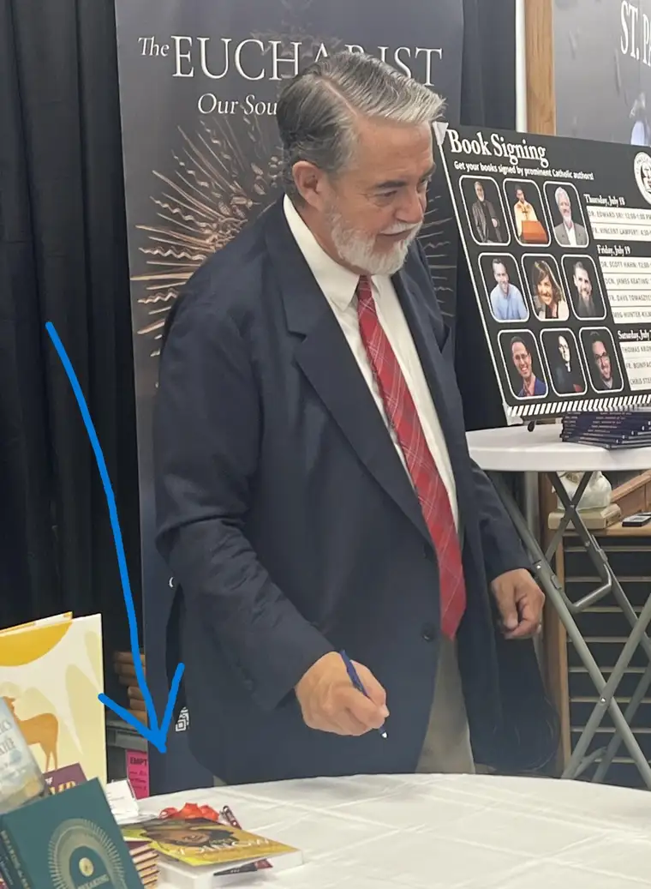
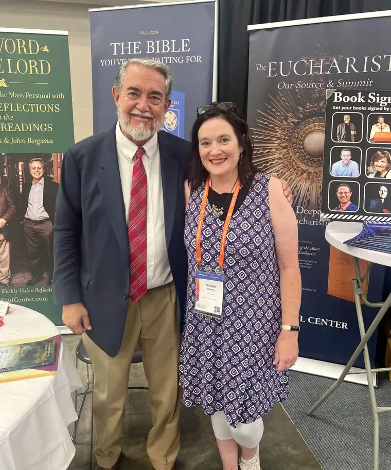
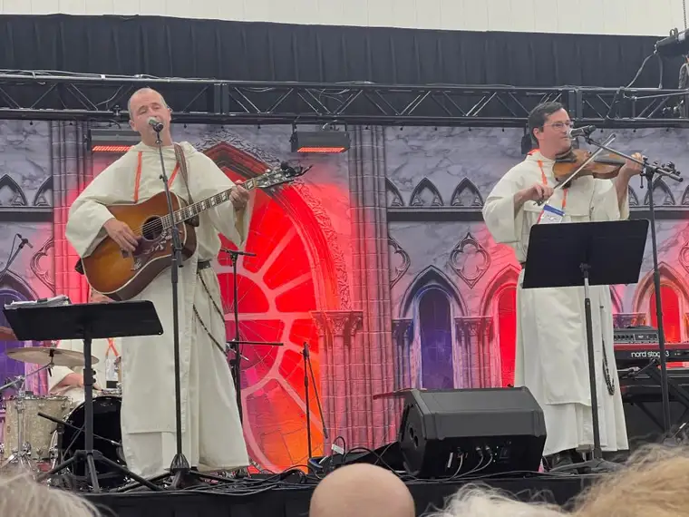
I had heard of the Hillbilly Thomists, but they’re still relatively new to me. However, they are obviously very well loved. They were the main attraction in the exhibit hall that day, and as we were leaving the booth with Scott, we noticed a crowd gathering near the stage. Apparently they were supposed to perform the day before but their flight was delayed, so many were anxious to hear them. We got a spot right up front, and were amazed at how it filled in, with several hundred people clapping their hands and stomping their feet like nobody’s business. Needless to say, I bought a few of their C.D.’s afterward. If you haven’t heard them yet, you’ll want to take a listen! (Here…)
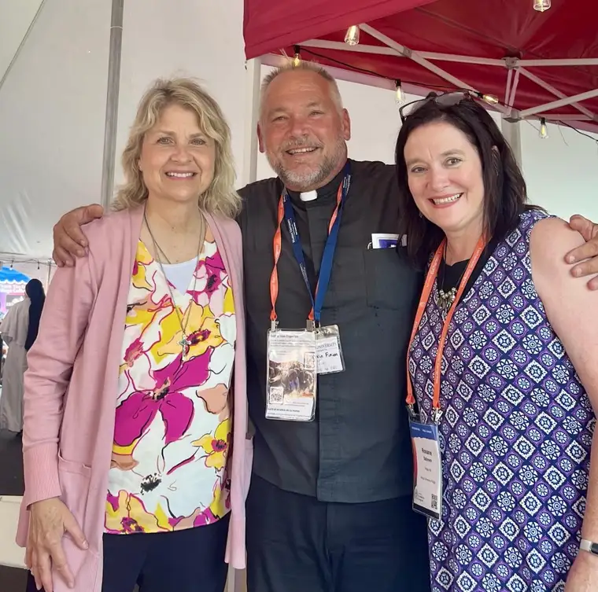
Lunchtime took place in the little “Eucharistic Congress Village.” A long, sit-down meal wasn’t possible timewise, so we settled on a quick meat and cheese boxed lunch. Only, we’d forgotten it was Friday. This energetic priest came by to scold us about our omissions, and from there, a lively conversation ensued with Fr. Finian, who is a military pastor. This surprise conversation really left us inspired!
After our afternoon session with Jason Evert, which was so thought-provoking, we headed back to the hotel to get ready for our special evening with Ascension. I was blessed to meet one of the marketing gals I’ve talked with through email, Lauren Joyce, along with the CEO, Jonathan Strate, and some other Ascension authors, including Dr. Mary Healy, Dr. Ted Sri (keynote speaker for Saturday) and his lovely wife, Elizabeth, along with Danielle Bean, whom I first met through our work with CatholicMom.com, along with some new faces.
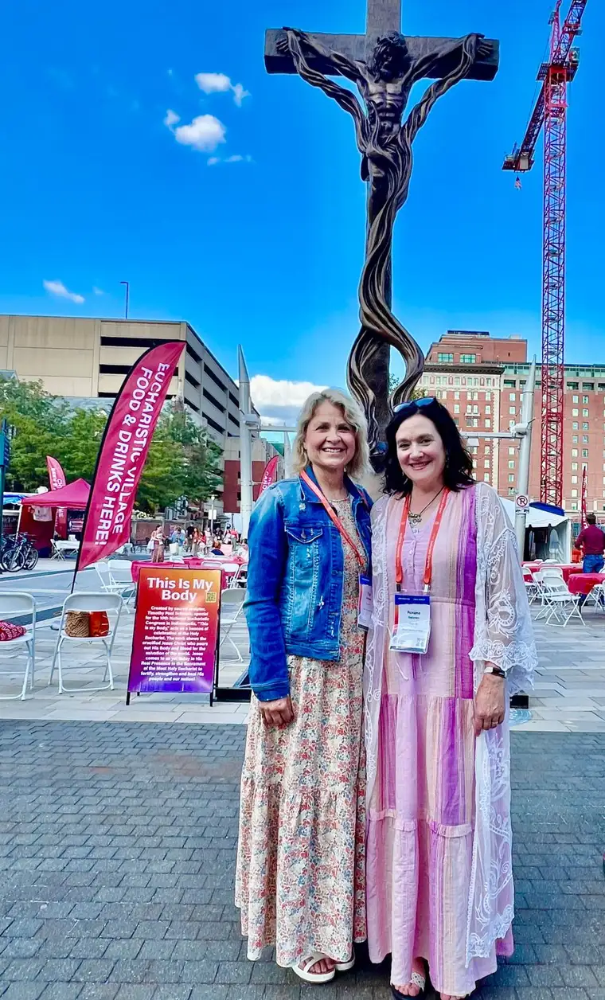
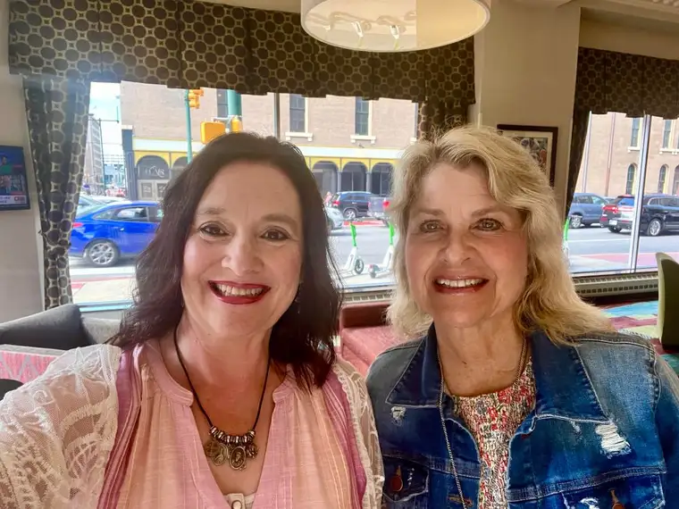

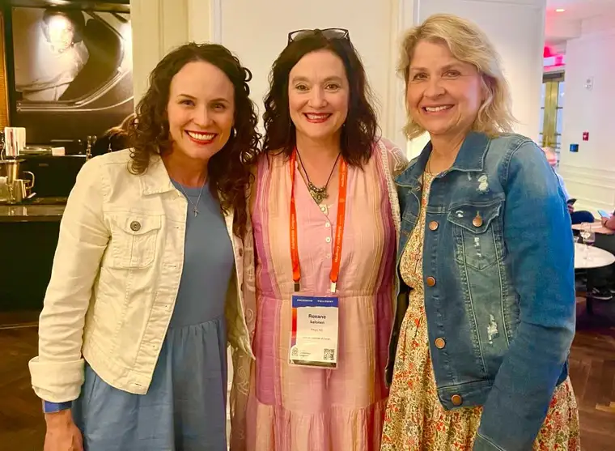
(Above, Mary Healy, Ted Sri and Danielle Bean, and others, gather for the welcome and prayer. Below, me and Danielle, and right, Elizabeth Sri, me and Joanne.)

It was a delicious buffet with steak or salmon (I chose steak and it was delish!), salad, and creme brulee for dessert. Before parting, we were blessed to be prayed over by Dr. Mary Healy — a special moment that those of you who know of her will understand. But then it was time to hustle back to Lucas Oil to hear from Sr. Josephine Garret and others. Sister’s talk was amazing; it’s another one I’d recommend you listening to if time. (You can find it here.) She is a gem, and such a gift to the Church. The healing Adoration session with Fr. Boniface Hicks that followed was such a beautiful way to close out the night; just us, Jesus and 60,000 of our friends. What blessings God brought us this day, and there would be more tomorrow on the climactic procession day. I’ll share more soon!
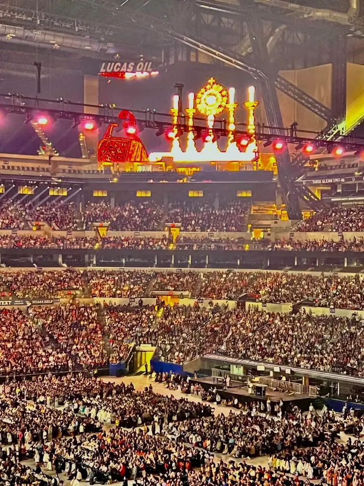
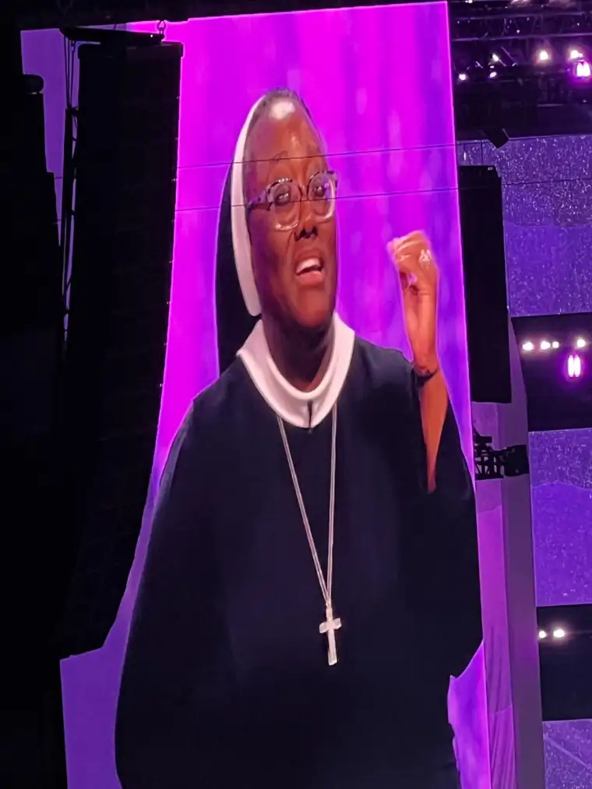